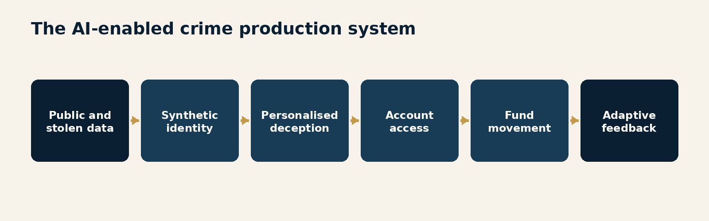
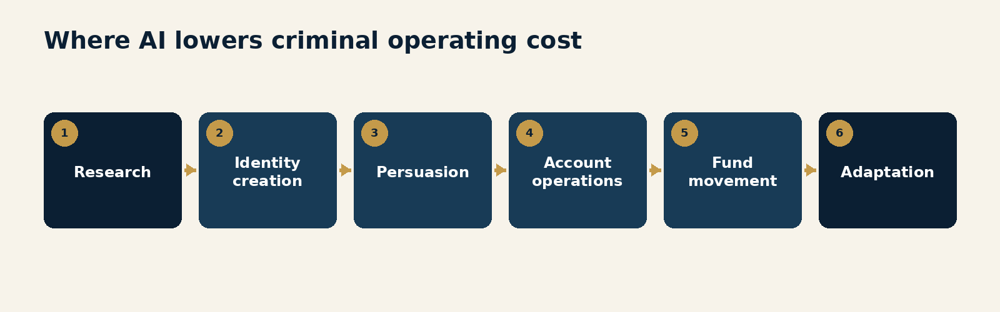
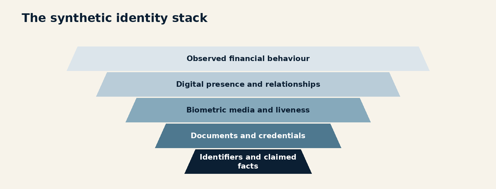
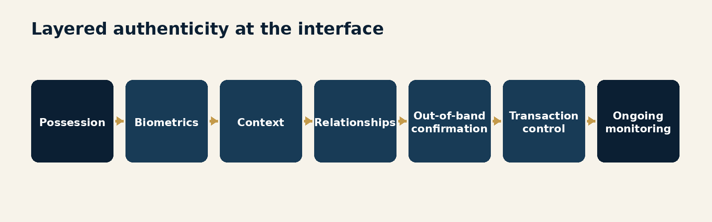
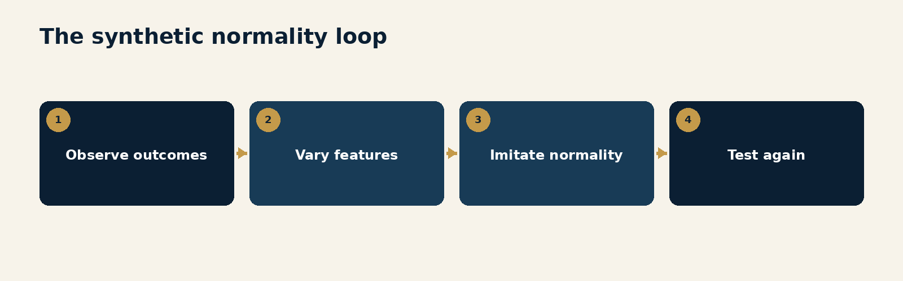
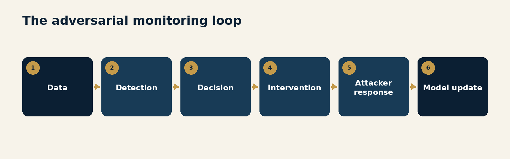
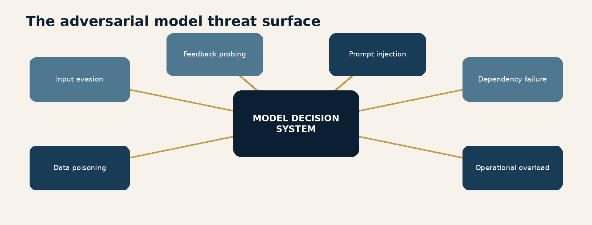
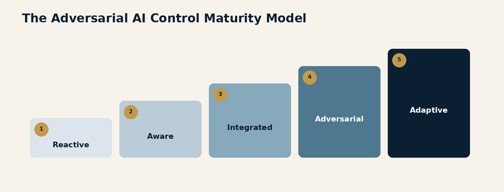

Foreword
Artificial intelligence has become one of the busiest subjects in compliance.
Boards want an AI strategy. Regulators want responsible use. Model-risk teams want inventories, validation and documentation. Legal teams want clear purposes, permissions and limits. Compliance functions are exploring copilots, automated investigations, alert prioritisation, adverse-media review, customer-risk assessment and agent-assisted decision-making.
These are sensible developments.
They also describe only one side of the transformation.
The same technologies that can assemble evidence for an investigator can assemble a false identity for a criminal. The same language model that can summarise a case can write a convincing investment scam in twenty languages. The same agent that can gather customer information can search for weak jurisdictions, coordinate money mules, schedule transactions and create explanations for activity that never had a legitimate purpose.
Financial institutions are asking how AI should be governed.
Criminals are asking whether it works.
That difference in decision-making speed matters.
The criminal does not need to replace every human with a machine to obtain an advantage. AI only has to make one part of the operation cheaper, faster or more convincing. A synthetic document can improve an account-opening attempt. Voice cloning can make a payment instruction more persuasive. An agent can manage more victims or mule accounts than one operator. Predictive tools can help activity resemble legitimate behaviour. Generative systems can build the commercial scenery around a laundering scheme: websites, invoices, correspondence, employee profiles and transaction narratives.
The result is not simply more digital crime.
It is a change in the production model of crime.
The Financial Action Task Force's 2025 horizon scan on artificial intelligence and deepfakes identifies documented deepfake-enabled fraud and explores future scenarios involving synthetic identities, pattern mimicry, automated layering, agent-managed mule networks and AI-assisted sanctions evasion. FATF is careful to describe several of these as horizon risks rather than established activity at scale. That distinction is important. So is the fact that the global standard setter now considers them credible enough to require preparation.
The evidence has continued to develop. FinCEN has reported increased suspicious activity involving deepfake media and fraudulent identity documents. The U.S. Treasury stated in March 2026 that analysis of Bank Secrecy Act data showed malicious actors successfully opening accounts with identities suspected to have been produced using generative AI and using those accounts to receive and launder fraud proceeds. INTERPOL's 2026 assessment concludes that generative AI has lowered barriers to fraud and enabled deepfake social engineering and synthetic identity activity at scale.
This is no longer a specialist technology issue.
It affects customer due diligence, fraud, transaction monitoring, sanctions, cybersecurity, payments, investigations, model management, third-party risk and operational resilience.
It also challenges a comfortable assumption: that the regulated institution is the most sophisticated participant in the control environment.
In an adversarial system, the customer is not always merely being assessed. A criminal customer may be studying the assessment. Every rejection, request for information, transaction delay and account restriction can provide feedback. Controls become observable. Thresholds can be tested. Detection logic can be approximated. Weaknesses can be found through persistence rather than brilliance.
The old operating model was designed to identify suspicious behaviour.
The emerging operating model must also withstand behaviour designed to defeat identification.
That requires more than purchasing another detection tool. It requires identity systems that evaluate authenticity continuously, monitoring that connects behaviour across networks, model governance that includes deliberate attack, agents with graduated authority, evidence that can be reproduced and a learning process that changes controls quickly.
The central proposition of this volume is simple:
Compliance cannot govern AI only as a technology the institution uses. It must govern for AI as a capability the adversary uses against the institution.

The objective is not to produce fear about every new model or declare that autonomous criminal organisations have already arrived fully formed.
The objective is to recognise the direction of travel early enough to design a response.
The criminals may already be in production.
Compliance does not need to panic.
It does need to leave the workshop.
Introduction
The Other AI Transformation
Most institutional AI programmes begin with an inventory.
Which models exist? What data do they use? Who owns them? What decisions do they influence? How are outputs reviewed? What happens when the model is wrong?
That discipline is necessary.
The mistake is to assume the inventory describes the whole AI risk.
It describes the AI controlled by the institution. It does not describe the AI operating in the customer population, criminal marketplace, supply chain or attack surface.
That external capability is changing four fundamentals of financial crime.
First, content is abundant. Documents, photographs, voices, videos, websites and correspondence can be produced quickly and cheaply. A criminal story no longer has to be supported by one forged document. It can be supported by an entire generated environment.
Second, interaction is scalable. A fraud operation can personalise conversations, maintain continuity and operate across languages and time zones. The persuasive labour once provided by a room of people can be augmented by software.
Third, behaviour can be coordinated. Agents can plan sequences, call tools, monitor results and adjust actions. The capability is imperfect, but perfection is unnecessary. A system that improves targeting, mule management or transaction timing creates economic value for the criminal.
Fourth, controls become part of the training environment. Criminals can learn from failed onboarding attempts, payment rejections and account restrictions. They can vary documents, devices, counterparties, amounts and timing. The institution sees separate attempts. The attacker sees an experiment.
This is why the issue is larger than deepfakes.
Deepfakes are visible and dramatic. They make the risk easy to explain to a board. A fake chief executive on a video call is an excellent way to secure everyone's attention, although perhaps not the preferred way.
The deeper challenge is orchestration.
An AI-enabled criminal operation can connect identity creation, social engineering, account opening, transaction activity, evidence fabrication and adaptation. Each component may look manageable on its own. The advantage emerges when they work together.
The defensive response must therefore connect controls that institutions traditionally manage separately.
Customer due diligence must communicate with fraud intelligence. Fraud intelligence must influence transaction monitoring. Monitoring must preserve evidence for investigations and model management. Model management must understand adversarial behaviour. Cybersecurity must share device and compromise information. Product teams must be able to change permissions and friction. Operations must know when automated decisions require human intervention.
An annual typology update cannot govern that environment.
Neither can an AI policy that focuses exclusively on whether employees are permitted to use a chatbot.
The institution needs two related forms of AI governance.
The first governs AI by the institution: purpose, data, performance, fairness, explainability, security, authority and accountability.
The second governs AI against the institution: impersonation, synthetic evidence, automated probing, behaviour mimicry, model evasion, data poisoning, agentic execution and coordinated attack.
The first asks whether our model can be trusted.
The second asks what happens when somebody is deliberately trying to make it wrong.
This volume develops that second view without abandoning the first. It follows the threat from the economics of criminal adoption through identity, deepfakes, behavioural mimicry and agentic coordination. It then turns to transaction monitoring, adversarial model governance and the operating model required for adaptive defence.
Several principles run throughout:
identity is a changing confidence assessment, not a completed document check;
consistency among digital artefacts is not proof that they are independent;
an apparently normal transaction can be the product of deliberate optimisation;
model drift may be caused by an intelligent opponent, not only a changing population;
controls must learn across customers, products and institutions;
automated defence needs governed authority, not unlimited autonomy; and
the speed from new intelligence to changed control is itself a risk measure.
The goal is not to place a machine between every customer and their money.
The goal is to distinguish legitimate activity from industrialised deception with enough speed, evidence and precision to preserve trust.
The Criminal Has an AI Strategy
AI changes financial crime first by changing its economics: more reach, more variation and more persistence for less specialist labour.
EXECUTIVE INSIGHT: The first governance error is to treat criminal AI as a future technology risk. Documented use already exists, while agentic scenarios are becoming plausible enough to require operating-model decisions now.
The asymmetry is strategic
Regulated institutions adopt technology through governance.
A new model may require a business case, privacy assessment, legal review, cybersecurity testing, model classification, validation, operational-readiness approval and committee endorsement. High-impact systems should receive that scrutiny.
Criminal organisations face a different optimisation problem.
They do not need fairness analysis. They do not document consumer harm. They are not waiting for supervisory clarity. Their threshold is practical: does the capability increase proceeds or reduce the chance of interruption?
This does not mean criminals innovate without constraint. They still face cost, skill, unreliable tools, operational errors, law-enforcement pressure and betrayal inside their networks. Generative models hallucinate for criminals too. Crime did not receive a special enterprise licence with better service levels.
But the adoption cycle can still be much shorter.
That creates a structural asymmetry. The institution may take months to approve a defensive use while the attacker can test several offensive variations in a day.
The answer is not ungoverned compliance technology. It is governance that recognises urgency, differentiates levels of authority and allows low-risk defensive experimentation to move quickly.
AI reduces the minimum efficient scale of crime
Large fraud and laundering operations have traditionally depended on specialised labour:
researchers identify targets and vulnerabilities;
document specialists create false evidence;
social engineers communicate with victims;
recruiters obtain money mules or straw account holders;
account operators manage credentials and payment activity;
money launderers route proceeds; and
supervisors coordinate the network and respond to disruption.
AI can assist each role.
A language model can generate messages and commercial documents. Image and video systems can create identities and purported evidence. Translation removes language barriers. Agents can perform research, maintain task lists, call external tools and coordinate repeatable processes. Predictive systems can help select timing, counterparties or patterns that appear less anomalous.
The important economic change is not that every role disappears.
It is that fewer skilled people can supervise more activity.
The marginal cost of another message, document, persona or transaction sequence falls. Criminal operations can test more variations and abandon unsuccessful ones more cheaply. Niche fraud can be personalised. Low-value targets can become commercially viable because the cost of engaging them declines.
INTERPOL's 2026 global fraud assessment describes generative AI as lowering barriers to entry and enabling hyper-realistic social engineering and synthetic identity fraud at scale. The U.S. Treasury's 2026 National Money Laundering Risk Assessment similarly identifies AI as increasing the size, scope and speed of criminal schemes.
This is industrialisation: not merely a new tool, but a change in the unit economics of the operation.

Crime is becoming a service stack
Criminal markets already provide specialised services: stolen credentials, malware, phishing kits, mule recruitment, fraudulent documents, compromised accounts, cash-out services and laundering.
AI strengthens the interfaces between those services.
A provider does not need to build a complete criminal platform. It can offer one improved component:
synthetic identity packages;
voice or video impersonation;
multilingual scam scripts;
automated victim engagement;
document generation;
vulnerability research;
transaction orchestration; or
advice on jurisdictions and control gaps.
This modularity matters for compliance. A single investigation may reveal only one layer. The customer using a synthetic identity may not operate the mule network. The mule recruiter may not control the ultimate beneficiary. The account that receives proceeds may have been purchased as a service.
The operating model must therefore identify infrastructure, not only individuals.
Repeated document templates, shared devices, common behavioural timing, reused wallets, payment beneficiaries, hosting patterns, code artefacts and communication channels can expose the service layer connecting otherwise separate cases.
The threat is both current and emerging
Credibility requires discipline about evidence.
Deepfake identity fraud, impersonation scams, generated communications and synthetic documents are documented. FinCEN has observed increased suspicious activity reporting related to deepfake media. Treasury has reported BSA data indicating accounts were opened using identities suspected to have been produced with generative AI. Authorities have published cases involving deepfake video calls and AI-assisted recruitment fraud.
Fully autonomous laundering pipelines are different.
FATF presents them as potential high-impact scenarios. It describes agents that could schedule microtransactions, manage mule accounts, build false commercial records, identify weak jurisdictions and adapt routes in response to controls.
Those scenarios should not be presented as universal present-day fact.
They should be treated as design inputs.
Risk management routinely prepares for credible events before they become common. Institutions do not wait for every bank to suffer the same cyberattack before testing recovery. They should not wait for autonomous criminal orchestration to become ordinary before deciding how it would be detected.
The strategy must start with capability, not labels
An institution may create a committee for "AI fraud" and accidentally narrow the issue to obviously generated media.
The capability view is stronger.
Leaders should ask whether criminals can use any technology to:
manufacture or corrupt evidence;
impersonate a trusted person;
automate persuasion;
scale account access;
imitate legitimate behaviour;
probe controls;
coordinate participants;
obscure ownership or purpose;
accelerate movement of proceeds; or
learn from intervention.
The label on the tool matters less than the change in criminal capability.
This also prevents governance from becoming trapped in product names. The models will change. The objectives will remain familiar.
The first control response
Every material financial-crime risk assessment should now include an adversarial AI section.
It should identify:
documented use relevant to the institution;
plausible emerging capabilities;
products and channels most exposed;
controls that rely heavily on visual, documentary or conversational trust;
monitoring logic that can be probed or imitated;
data that could be poisoned or manipulated;
third parties providing identity, fraud or analytics services;
current detection and intervention authority; and
time required to change a control after new intelligence.
The assessment should belong to an accountable cross-functional owner.
Criminal AI sits between fraud, AML, sanctions, cybersecurity, identity, model risk and product. If each function owns only its familiar slice, the organisation may govern every component while missing the attack.
Common failure modes
Treating criminal AI as a cybersecurity topic with no connection to customer or transaction controls.
Describing all agentic laundering scenarios as current fact and weakening the credibility of the analysis.
Waiting for regulation to specify a control before assessing a documented threat.
Measuring the institution's AI inventory while ignoring external AI capabilities.
Buying a deepfake detector without mapping the decisions that rely on potentially synthetic evidence.
Assuming criminals need perfect technology before they gain an economic advantage.
Questions for Leaders
Which parts of our customer and payment journeys become cheaper to attack when content and interaction are abundant?
Where are we relying on evidence that can now be generated or manipulated at scale?
Which criminal AI uses are documented in our markets, and which are credible horizon scenarios?
How quickly can we test and deploy a low-risk defensive control?
Who owns the adversarial AI threat across fraud, AML, sanctions, cybersecurity and model risk?
Synthetic Identity Becomes a Product
The emerging identity problem is not one forged document. It is a coherent person, business and history assembled from real, stolen and generated parts.
EXECUTIVE INSIGHT: Identity verification must test the independence, continuity and behaviour of evidence, not merely whether several digital artefacts agree with one another.
From stolen identity to manufactured identity
Traditional identity fraud often begins with a real person.
A criminal steals credentials, personal information or documents and attempts to impersonate the victim. The control challenge is to determine whether the person presenting the identity is its rightful owner.
Synthetic identity fraud is different.
A synthetic identity can combine real and fabricated elements to create a person who does not exist as represented. A real identifier may be paired with a different name, address, face, device history or date of birth. Over time, the identity may accumulate accounts, credit history and apparently normal behaviour.
Generative AI expands the package.
The synthetic person can have:
identity documents;
portrait and lifestyle photographs;
a voice;
live or pre-recorded video;
employment records;
business correspondence;
a social-media presence;
a website or professional profile;
references and counterparties; and
transaction activity consistent with the claimed story.
The fraud is no longer a single false data point. It is a product.
FinCEN's 2024 alert states that criminals have used generative AI to create falsified documents, photographs and videos to circumvent customer identification and verification. Treasury's March 2026 report adds an important outcome: BSA data indicated that malicious actors had successfully opened accounts with fraudulent identities suspected to have been produced using generative AI and used them to receive and launder fraud proceeds.
This connects identity fraud directly to financial-crime control.
Consistency can be manufactured
Compliance programmes are trained to look for discrepancies.
Does the address on the document match the application? Does the employer exist? Does the website describe the same business? Do invoices align with counterparties? Does the customer explain the activity consistently?
Those are still useful questions.
The weakness is assuming that agreement among sources proves truth.
One generative system can produce the document, website, email history and explanation. The artefacts agree because they share an author, not because they describe reality.
The control must test independence.
Leaders should distinguish:
self-asserted evidence, supplied directly by the applicant;
generated or customer-controlled evidence, such as websites, emails and uploaded documents;
third-party evidence, obtained from a source outside the customer's control;
authoritative evidence, maintained under a recognised legal or institutional process; and
behavioural evidence, observed through ongoing interaction and use.
No category is infallible. Authoritative databases may contain stolen or outdated information. Devices can be shared. Biometrics can be attacked. Third parties can be compromised.
The objective is not perfect identity.
It is a reasoned confidence statement supported by evidence with known provenance.

The person, controller and beneficiary may differ
AI makes an old identity problem more visible.
The person named on an account may not control it. The person controlling the interface may act for another party. The economic beneficiary may be elsewhere. A software agent may initiate activity under delegated or stolen authority.
Identity models should therefore preserve several distinct roles:
Legal identity: the person or entity to which rights and obligations attach.
Presenter: the individual or system supplying evidence during verification.
Controller: the party capable of directing the account, wallet or transaction.
Initiator: the human or machine that created the instruction.
Beneficiary: the party receiving economic value.
Principal: the person or organisation on whose behalf an agent acts.
Collapsing these roles into one customer field creates false certainty.
A genuine identity document does not prove current control. A successful biometric check does not prove the purpose of the account. A cryptographic signature proves control of a key, not legitimate ownership of the funds.
The data model must be able to say what is known, about whom, at what time and with what confidence.
Onboarding is the beginning of authentication
Many programmes treat identity as a gate.
The customer crosses it at onboarding and becomes known. Later controls focus on transaction behaviour.
Synthetic identities expose the weakness of that sequence.
An identity can mature. A criminal may establish normal behaviour, build transaction history, increase limits and wait. Access may later be sold or transferred. Credentials may be compromised. The original operator may be replaced. An account opened for one purpose may become infrastructure for another scheme.
Continuous authenticity does not mean repeating full KYC every week.
It means using later evidence to update confidence:
device and network continuity;
authentication changes;
new authorised users;
wallet or beneficiary changes;
communication style;
transaction purpose;
counterparty relationships;
customer-service interactions;
payment disputes and fraud reports; and
links to newly identified criminal infrastructure.
The institution should define events that reopen the identity decision.
Businesses can be synthetic too
The debate often focuses on fake people.
Commercial identity can be manufactured just as effectively.
A shell company can be surrounded by generated legitimacy: a polished website, staff biographies, product catalogues, office photographs, supplier correspondence, contracts, invoices and customer testimonials.
FATF's horizon scan describes scenarios in which AI supports trade-based money laundering and sanctions evasion through false invoices, shell import-export firms, fake business records, websites, suppliers, catalogues and shipping documents.
Some of these scenarios are forward-looking. Their components are already familiar.
The response is not a longer checklist of documents.
It is verification of economic reality:
Does the company have independent evidence of operations?
Do directors and beneficial owners connect to the stated activity?
Are counterparties real and independently observable?
Do logistics, payments, tax, registration and staffing evidence align?
Is the volume plausible for the business's age, location and resources?
Are supposedly independent companies connected by devices, templates, domains or beneficiaries?
A generated business can look excellent in a PDF.
Economic reality remains stubbornly less impressed by the font.
Build an identity evidence graph
Linear KYC files are poorly suited to synthetic identity.
The institution needs an evidence graph connecting:
people;
entities;
identifiers;
devices;
addresses;
documents;
biometrics;
domains;
communications;
bank accounts;
wallets;
beneficiaries; and
observed events.
Each connection should carry provenance, time and confidence.
This enables several stronger questions:
Which identities depend on the same supposedly unique evidence?
Which documents share templates, metadata or visual artefacts?
Which businesses use the same infrastructure?
Which customers changed controllers after onboarding?
Which accounts behave as a coordinated network?
Which evidence was later contradicted?
Graph analysis does not replace investigation. It reveals relationships that a case-by-case file cannot.
Customers need a route to correct errors
Synthetic identity controls will create false positives.
Real customers may have limited digital histories, shared addresses, unusual documents, accessibility needs or devices used by several family members. Deepfake detection tools can be wrong. Biometric performance may vary across populations and conditions.
An adaptive identity programme therefore needs:
proportional friction;
alternative verification routes;
documented reasons for decisions;
human review for consequential outcomes;
customer appeal and correction;
monitoring of false-positive patterns; and
evidence that model performance remains appropriate across customer groups.
The response to synthetic identity cannot be to treat unfamiliar identity as fraudulent.
Good control distinguishes uncertainty from suspicion.
Common failure modes
Treating agreement among customer-supplied documents as independent corroboration.
Recording one customer identity without separating presenter, controller, initiator and beneficiary.
Completing identity at onboarding and ignoring later changes in control or behaviour.
Using deepfake or biometric scores without preserving confidence, version and supporting evidence.
Requesting more documents when the problem is whether the underlying activity is real.
Building stronger detection without a practical customer appeal process.
Questions for Leaders
Can our data model distinguish legal identity, account controller, transaction initiator and economic beneficiary?
Which identity evidence is genuinely independent of the customer?
What events cause us to reassess identity confidence after onboarding?
Can we detect repeated infrastructure across apparently unrelated identities and businesses?
How can a legitimate customer challenge an incorrect synthetic-identity conclusion?
Deepfakes Break Trust at the Interface
Seeing and hearing are still evidence. They are no longer self-authenticating.
EXECUTIVE INSIGHT: Deepfake defence is not a detector. It is a layered authentication and payment-authority design that assumes any single channel can be convincingly imitated.
The interface was built for human trust
Financial services rely on moments of recognition.
A customer appears on video. An executive calls to confirm a payment. An employee recognises a colleague's voice. A photograph shows business premises. A selfie matches the identity document. A support agent hears a familiar story and restores access.
These interactions combine technical verification with human intuition.
Deepfakes attack both.
Synthetic media can imitate appearance, voice and manner. Generated video can be replayed or injected through virtual-camera tools. Audio can create urgency in a trusted voice. A collection of synthetic participants can make a fraudulent meeting appear socially validated.
FATF's horizon scan describes a public case in which criminals simulated a video conference involving senior executives and induced a transfer of approximately $25 million. INTERPOL's work on synthetic media warns that deepfakes can undermine liveness checks, document verification and confidence in digital interactions.
The control implication is not that video has become useless.
It is that video alone should not carry authority it cannot support.
Deepfakes attack decisions, not only identity
The most obvious use is account opening.
A criminal presents a synthetic face or manipulated video to pass a liveness or facial comparison check.
But the attack surface continues throughout the relationship:
account recovery;
password or device reset;
addition of an authorised user;
change of beneficiary;
approval of a payment;
release of a hold;
modification of contact details;
response to an investigation;
instruction from an executive; and
communication with a victim.
The risk is highest where one persuasive interaction can override several quieter controls.
A well-designed payment process may require dual approval and beneficiary verification, yet a convincing call from a senior leader can pressure an employee to find an exception. The deepfake exploits authority, urgency and culture more than the camera.
This is why awareness training must address decision rights, not just visual tells.
Employees should not be expected to win a forensic contest with synthetic media while a supposed chief executive is demanding immediate action.
The process should make verification normal and resistance safe.
Build layered authenticity
No single control is sufficient.
Liveness technology can improve. It can also be attacked. Device intelligence can reveal virtual cameras or emulators. It can also be spoofed. Challenge questions can help. Their answers may be stolen or generated. Human review can identify inconsistencies. Humans are also persuadable.
A strong control combines independent layers:
Possession: a trusted device, credential, key or channel.
Biometric evidence: face, voice or behavioural signal with known limitations.
Context: location, device history, timing, purpose and prior activity.
Relationship evidence: known counterparties, authorised roles and established patterns.
Out-of-band confirmation: verification through a separately controlled channel.
Transaction control: limits, dual approval, cooling-off periods or beneficiary confirmation.
Behavioural monitoring: activity before and after the high-risk event.

The layers should fail independently where possible.
If the same compromised email account controls the password reset, receives the verification link and confirms the new beneficiary, three steps have created one control.
Liveness is a system property
The word liveness can create more confidence than it deserves.
A liveness score is produced by a method, model, configuration, device environment and interaction design. Performance can change by channel, lighting, camera quality, attack type and customer population.
Leaders should understand:
which presentation and injection attacks are tested;
whether virtual cameras and replay tools are detected;
how thresholds are set;
what happens below, near and above the threshold;
how model and software versions are tracked;
whether testing includes current deepfake tools;
how vendor updates are validated;
what evidence is retained;
how false accepts and false rejects are measured; and
which alternative route exists for legitimate customers.
The institution should also test the complete journey.
A strong onboarding liveness check may be undermined by a weak support process that later changes the phone number after a persuasive call.
Attackers use the easiest door, not the one featured in the board presentation.
Deepfake detection has a half-life
Detection methods often look for artefacts left by generation or manipulation.
Those artefacts change as models improve. Compression, screen recording, re-encoding and channel conditions may conceal them. A detector trained on one generation method may perform poorly on another.
FATF notes that detection techniques can become obsolete quickly and emphasises trained expertise, public-private partnership, content verification, biometric analysis and behavioural anomaly detection.
This creates a model-management requirement.
Deepfake detection must be governed for:
attack coverage;
data recency;
channel-specific performance;
vendor change;
drift;
adversarial testing;
uncertain outputs;
fallback controls; and
incident learning.
A binary label is rarely enough.
The decision record should preserve the score, confidence, model version, evidence, attack indicators, contextual factors and final action.
Verification culture is a control
Deepfake-enabled executive impersonation succeeds when process can be overridden by status or urgency.
Institutions need simple behavioural protocols:
high-risk instructions are never authorised by voice or video alone;
unusual payment requests require confirmation through a pre-established channel;
employees may pause without penalty;
code words or shared secrets are treated cautiously because they can be compromised;
approval roles and limits are enforced technically;
beneficiary changes receive heightened review;
suspected impersonation triggers a defined incident path; and
the organisation communicates attempts quickly.
This is not distrust.
It is a professional response to an environment in which convincing media is cheap.
The best protocol is one employees can follow while stressed. If verification requires locating a forty-page policy and finding the one colleague who is currently on holiday, the deepfake may not be the weakest part of the system.
Preserve evidence for investigation
When a deepfake event occurs, institutions should retain:
original media files where available;
message headers and channel metadata;
device, network and session information;
identity and liveness results;
model versions and detector outputs;
transaction instructions and approvals;
customer-service notes;
associated accounts and beneficiaries;
timing of interventions; and
subsequent movement of funds.
Screenshots alone are insufficient.
The objective is to reproduce what the institution saw, what it decided, why it acted and how the event connected to the wider network.
Common failure modes
Treating a deepfake detector as a complete identity-control strategy.
Allowing voice or video recognition to override payment-authority rules.
Testing liveness models without testing account recovery and customer support.
Training employees to spot visual defects while leaving them unable to pause an executive request.
Retaining a binary detector result without the underlying evidence and model version.
Updating awareness material annually while attack methods change continuously.
Questions for Leaders
Which consequential decisions can currently be authorised through voice, video or uploaded media?
Are the authentication layers genuinely independent?
When did we last test current injection, replay and synthetic-media attacks against the complete customer journey?
Can an employee pause an urgent executive instruction without cultural or procedural penalty?
Can investigators reproduce a deepfake decision after the relevant model and vendor service have changed?
Crime Learns to Behave Normally
The next generation of evasion may not hide activity. It may generate activity that looks statistically ordinary.
EXECUTIVE INSIGHT: Monitoring built only to find abnormal transactions is vulnerable when an adversary can study normal behaviour, test controls and deliberately manufacture normality.
The red flag is now feedback
Financial-crime controls publish information.
Regulators issue typologies. Institutions request documents, reject transactions, apply holds and close accounts. Vendors explain detection capabilities. Enforcement actions describe control failures. Public reports identify thresholds, patterns and weak sectors.
This transparency improves collective defence.
It also gives adversaries material to study.
FATF's horizon scan warns that criminals could use public guidance, typology reports and regulatory information to understand red flags, identify weak jurisdictions and develop countermeasures. It considers predictive models trained to reproduce legitimate transaction patterns such as payroll or trade payments.
The control environment therefore produces feedback.
An attacker submits an application or transaction and observes the result:
approved;
rejected;
delayed;
challenged;
subjected to additional information;
limited;
frozen; or
followed by account action.
One attempt reveals little. Repeated variation reveals more.
An AI-assisted attacker can change one feature at a time: amount, timing, device, beneficiary, description, document, jurisdiction or transaction sequence. The institution may see unrelated customers. The attacker sees a controlled experiment.
Suspicion has traditionally depended on deviation
Many monitoring approaches compare activity with a rule, peer group or customer profile.
The transaction is large, rapid, international, circular, inconsistent, newly connected or otherwise unusual.
Those methods remain useful because criminals cannot control every signal. They face real needs to collect, move and use value. Networks create relationships. Operational mistakes occur.
But AI makes imitation cheaper.
An attacker can generate:
varied payment amounts rather than repeated round values;
ordinary timing rather than obvious bursts;
plausible descriptions;
counterparties matched to the claimed business;
gradual growth;
periods of dormancy;
small genuine purchases;
payroll-like distribution;
synthetic customer-service interactions; and
documents aligned with the transaction story.
The result can be a customer profile designed to pass a customer-profile model.
This is synthetic normality.

Normal for whom?
The defence begins by recognising that normality has several levels.
Activity may be:
normal for the individual account;
normal for the claimed customer type;
normal for the product;
normal for the counterparty network;
normal for the institution; or
normal for the wider market.
A mule account may appear normal individually while participating in an abnormal network. A synthetic merchant may process plausible sales while sharing devices and beneficiaries with several supposedly unrelated businesses. Hundreds of low-value transfers may sit below local thresholds while forming a coordinated movement of funds.
Monitoring must move between levels.
Customer profiling asks whether the account changed.
Network analysis asks whether several accounts are changing together.
Product analytics asks whether the channel is being used in a new way.
External intelligence asks whether the infrastructure connects to activity outside the institution.
No single view is sufficient.
Purpose is harder to imitate than form
Transaction form can be generated.
Purpose must remain connected to economic reality.
A payroll-like payment pattern is not payroll merely because values and timing resemble salaries. The institution should also understand:
who the employees are;
whether the business has credible operations;
whether payroll taxes or related obligations exist;
whether recipients behave like employees;
how funding enters the account;
whether payments align with contracts and geography;
whether the business has the resources to support the volume; and
whether the same recipients appear across unrelated employers.
This is not a demand to verify every underlying invoice manually.
It is a monitoring design that connects behavioural form with customer, counterparty and economic context.
The strongest signal may be inconsistency between a very normal-looking pattern and the absence of the real-world activity that should produce it.
Agents can probe the quiet edges
Rule thresholds create edges.
Human criminals have always tested them. Agents can increase persistence and variation.
A probing system may:
submit transactions at different values;
vary velocity and time of day;
test several accounts or wallets;
observe information requests;
identify which beneficiaries trigger friction;
compare channels;
route activity through lower-control products; and
pause when intervention rises.
The institution should therefore monitor decisions as well as transactions.
Repeated near-threshold attempts, coordinated declines, alternating channels, rapid changes after a challenge and similar behaviour across identities can reveal control probing.
This requires retaining declined and abandoned activity.
Many monitoring systems focus on completed transactions. In an adversarial environment, failed attempts are intelligence.
Detection should include friction response
Legitimate and criminal customers respond differently to friction, although never perfectly.
A genuine customer may supply coherent evidence, use established channels and resume expected activity after resolution. A criminal operator may switch devices, alter the story, replace the identity, move to another account or redistribute activity across the network.
Monitoring should capture:
what challenge was presented;
which evidence was requested;
how quickly and through which channel the customer responded;
whether the response was independently verified;
what changed afterwards;
whether related accounts made similar changes; and
whether the same evidence appeared elsewhere.
The response to a control becomes part of the behavioural profile.
Care is essential. Customers under stress, with limited documentation or unfamiliarity with financial processes may also respond inconsistently. The signal must be interpreted in context and supported by appeal and review.
Typology performance has a half-life
A typology is not permanently effective because it once detected crime.
After deployment:
criminals change behaviour;
products change;
customers adapt;
investigators learn;
data quality shifts;
thresholds are adjusted; and
the model's decisions alter the population it later observes.
AI accelerates several of those feedback loops.
Leaders should measure:
time from typology publication to control assessment;
time from confirmed case to new detection logic;
change in yield after intervention becomes visible;
migration to other channels or entities;
recurring near misses;
new false-positive concentrations; and
evidence that criminals changed in response.
A falling alert rate may indicate improvement.
It may also indicate that the adversary read the memo.
Common failure modes
Assuming normal-looking activity is low risk without testing economic purpose.
Monitoring completed transactions while discarding failed or abandoned attempts.
Calibrating models at customer level without network, product or market views.
Publishing thresholds or control details more widely than operationally necessary.
Treating a fall in alerts as proof that the threat declined.
Updating typologies without measuring how criminal behaviour migrated.
Questions for Leaders
Which of our controls can be tested repeatedly from outside the institution?
Do we retain and connect failed onboarding, declined payments and abandoned attempts?
Can monitoring distinguish individual normality from coordinated network abnormality?
Where do we validate economic purpose rather than transaction form?
How do we know when a typology has lost effectiveness because the adversary adapted?
Agents Industrialise the Workflow
Generative AI creates content. Agents connect content, decisions and actions into a repeatable operating process.
EXECUTIVE INSIGHT: The material risk from agents is orchestration. Small improvements across research, identity, persuasion, mule management and fund movement can compound into a much more scalable criminal system.
What makes an agent different
A conventional model produces an output.
An agent can pursue an objective through several steps. It may gather information, choose a tool, call an application, evaluate the result, update a plan and continue with limited human involvement.
The term covers a wide range of systems. Some are little more than scripted workflows with a language interface. Others can make flexible decisions within broad limits. Reliability remains imperfect. Agents can misunderstand instructions, fail to complete tasks or take unsafe actions.
Again, criminal use does not require perfection.
If an agent can complete eighty routine tasks and refer twenty exceptions to a human operator, the economics still change.
The risk is especially important where financial systems expose:
digital onboarding;
application programming interfaces;
instant payments;
virtual assets;
online marketplaces;
remote account servicing;
automated customer support; and
machine-readable public information.
Agents are designed for environments in which information can be read and actions can be called.
Modern finance increasingly provides both.
The criminal workflow can be decomposed
FATF's horizon scan describes several potential agentic scenarios:
generating a false documentary trail for layering;
scheduling microtransactions and moving funds when risk is lowest;
managing hundreds of mule accounts;
automating purchases, gambling or gaming activity;
researching weak jurisdictions and sanctions-evasion strategies; and
creating shell-company websites, suppliers, catalogues and correspondence.
These are not one capability.
They are a workflow.
A criminal operation could separate it into specialised agents:
Research agent: identifies victims, businesses, employees, controls and jurisdictions.
Identity agent: creates or assembles personas, documents and supporting presence.
Persuasion agent: manages multilingual conversations and social engineering.
Access agent: attempts onboarding, recovery or credential use.
Mule-management agent: recruits, instructs, monitors and replaces participants.
Transaction agent: schedules and routes value within limits.
Evasion agent: studies interventions and proposes variations.
Evidence agent: creates invoices, contracts and explanations.
A human supervisor may approve high-risk actions, resolve errors and control proceeds.
This resembles legitimate enterprise architecture for an uncomfortable reason: both are attempts to coordinate complex work efficiently.
Agents create operational persistence
Human operations tire, forget and lose consistency.
Agents can maintain records, reminders and repeated engagement. A scam can continue across weeks or months. A mule can receive tailored instructions. An account can be checked continuously. A victim can be contacted at the moment they are most likely to respond.
Persistence matters because many frauds depend on trust and timing.
Romance, investment, invoice and impersonation scams often require a sequence:
establish contact;
learn the target;
build credibility;
introduce urgency or opportunity;
request an initial low-risk action;
increase commitment;
direct payment; and
retain the victim when doubts appear.
AI can support the continuity of that sequence across more victims.
The defence must therefore look for coordinated infrastructure and repeated narrative patterns, not only obviously identical messages.
Machine identity becomes a financial-crime control
Legitimate institutions will also use agents.
An approved treasury agent may initiate payments. A customer-service agent may change account information. A compliance agent may investigate or constrain activity. A marketplace agent may settle sellers automatically.
The same interface can receive instructions from authorised and malicious software.
This creates a machine-identity requirement.
For each agent capable of affecting money or customer access, the institution should know:
the legal principal;
the technical identity;
the owner;
the approved purpose;
the tools and data it may access;
transaction and velocity limits;
permitted counterparties;
the model and software version;
approval and override requirements;
logging and evidence;
revocation capability; and
the party accountable for outcomes.
An API key is not a complete identity.
It proves possession of a credential. It does not prove that the current action is authorised, expected or beneficial to the principal.
Agent behaviour must be bounded
Institutions should distinguish levels of authority:
Observe: gather and organise information.
Recommend: propose a classification or action.
Prepare: assemble a transaction, case or customer response without executing it.
Constrain: apply low-impact limits within approved policy.
Intervene: reject, pause, freeze or alter an activity.
Adapt: change parameters or permissions based on outcomes.
Each higher level requires stronger identity, evidence, testing, monitoring, fallback and human accountability.
This applies to defensive agents and customer agents.
An agent initiating a small recurring supplier payment under an established mandate presents a different risk from an agent creating new beneficiaries and moving the maximum available balance.
The policy should be expressed in machine-enforceable terms where possible:
amount;
frequency;
purpose;
beneficiary;
product;
jurisdiction;
device or environment;
time;
required evidence; and
escalation condition.
Agents can attack agents
Agentic systems introduce a new contest.
A criminal agent may attempt to manipulate a customer-service or compliance agent through:
deceptive instructions;
malicious content in uploaded documents;
prompt injection embedded in websites or messages;
false claims of authority;
repeated testing;
exploitation of tool permissions; or
contamination of retrieved information.
The defensive agent may be accurate in ordinary use and unsafe under deliberate attack.
This is why agent security, model risk and financial-crime risk cannot be separated.
NIST's 2025 adversarial machine-learning taxonomy identifies evasion, poisoning, privacy attacks, direct prompting and indirect prompt injection among relevant attack classes. The terminology is technical, but the operating point is simple: models can be attacked through their inputs, data, environment and use.
An agent reading untrusted customer content should not be permitted to treat that content as system instruction. An agent summarising an investigation should not be able to release a hold merely because an uploaded invoice asks politely.
Virtual assets increase execution speed
FATF's July 2026 virtual-assets update identifies AI as an emerging risk factor across fraud, hacking and money laundering. It reports cases involving synthetic profiles and deepfake recruitment interviews that led victims to install malware or grant wallet access, resulting in theft of more than $1 million in virtual assets, primarily stablecoins.
It also warns that AI coding assistants and agents may analyse smart-contract vulnerabilities, generate exploit code and identify attack paths, while stolen assets can be moved rapidly through stablecoins, decentralised exchanges, bridges and multiple service providers.
This connects the present volume with stablecoin control.
An agent can act continuously. A blockchain can settle continuously. A bridge can move value across environments continuously.
The control cannot depend on everyone being back at their desk tomorrow morning.
Detection should target orchestration
Individual agent actions may be small and plausible.
The orchestration layer creates stronger signals:
common infrastructure;
repeated timing;
shared instructions;
coordinated beneficiary changes;
similar document semantics;
identical response patterns;
machine-speed navigation;
activity across many accounts;
rapid replacement after intervention; and
consistent optimisation around friction.
Graph analytics, behavioural clustering and cross-channel evidence are therefore central.
Institutions should also simulate agentic scenarios. Red teams can test whether a controlled agent could:
create multiple applications;
vary evidence;
learn from rejection;
manipulate a support channel;
coordinate low-value transfers;
exploit an agent interface; or
cause a defensive model to disclose useful feedback.
The test should be authorised, contained and measured.
The criminal's experiment is not likely to be.
Common failure modes
Treating agents as chatbots and ignoring their access to tools and transactions.
Recording the human customer while failing to identify the software acting for them.
Allowing one credential to authorise any action within an account.
Giving defensive agents broad intervention authority before proving lower-risk uses.
Testing agents for ordinary accuracy without adversarial inputs or prompt injection.
Monitoring individual transactions without detecting coordinated agent behaviour.
Questions for Leaders
Which internal, customer or third-party agents can affect money, identity or account access?
Can we identify the principal, authority and version behind each material agent action?
Which permissions can be enforced technically rather than described only in policy?
Have we tested whether untrusted customer content can manipulate an internal agent?
What signals would reveal one agent coordinating activity across hundreds of accounts?
Transaction Monitoring Becomes Adversarial
Monitoring is no longer only a classification problem. It is a contest against actors who can observe, imitate and adapt to the control.
EXECUTIVE INSIGHT: An effective monitoring programme must detect criminal activity, detect attacks on the detection process and learn from the adversary's response to intervention.
The monitored population now includes strategists
Traditional transaction monitoring is often described as pattern detection.
The institution defines rules or models that identify activity associated with money laundering, fraud, sanctions evasion or other risk. Investigators review alerts and produce outcomes. Performance is assessed through coverage, yield, timeliness, quality and regulatory compliance.
That description assumes the monitored population generates behaviour for its own purposes.
An adversarial population also generates behaviour for the monitor.
It may:
stay below known or inferred thresholds;
split activity across accounts;
imitate peers;
create plausible purpose;
change behaviour after a challenge;
poison customer profiles with normal activity;
use compromised good accounts;
exploit products with weaker data;
migrate between institutions; and
test whether a detector has changed.
Monitoring therefore has two related objectives:
identify financial crime; and
identify deliberate manipulation of the detection environment.
Adversarial risk enters at several points
A monitoring system can be attacked through:
Inputs
Customer data, payment messages, documents, device signals, labels and external intelligence may be false, incomplete or manipulated.
Behaviour
Transactions can be designed to evade rules, resemble legitimate activity or fragment relationships.
Feedback
Alerts, declines, requests for information and account actions can reveal which attempts attracted attention.
Learning
If models retrain on contaminated data or labels influenced by undetected crime, the institution may teach the system that criminal behaviour is normal.
Operations
Attackers can create volume to overwhelm investigators, exploit queues or time activity around staffing and service outages.
Dependencies
Identity, sanctions, fraud and analytics vendors may have uneven coverage, stale models or vulnerable interfaces.

The control design must address the loop as a whole.
A false negative can become training data
Machine-learning models depend on outcomes.
But financial-crime labels are incomplete.
An alert closed without suspicion does not prove the activity was legitimate. An account with no reported fraud may still be controlled by a criminal. A suspicious activity report is not a judicial determination. A law-enforcement request may arrive long after the behaviour.
Adversarial activity makes this uncertainty more important.
If a synthetic identity operates successfully for months, its activity may enter the reference population as a good customer. If a mule account completes many ordinary payments before cashing out, the model may learn the preparatory behaviour as normal. If investigators repeatedly accept generated documents, those cases may reinforce the wrong conclusion.
Training governance should therefore distinguish:
confirmed legitimate outcomes;
confirmed criminal outcomes;
investigator decisions;
unresolved activity;
weak proxy labels;
delayed outcomes; and
labels potentially affected by control failure.
The system should not confuse absence of detection with evidence of innocence.
Monitoring needs several distances
Adversarial behaviour may be invisible at one level and obvious at another.
Leaders should combine:
event detection: what is unusual about the current payment or action;
customer detection: what changed in the customer's behaviour or identity;
relationship detection: which counterparties and infrastructure are connected;
network detection: how activity coordinates across many accounts or wallets;
product detection: whether a channel is being exploited in a new way;
institution detection: whether attackers are testing several internal journeys; and
external detection: what intelligence from other firms, authorities and vendors reveals.
This is not a demand for one enormous model.
It is an evidence architecture in which different detectors can contribute to an accountable decision.
The decision must retain uncertainty
Adversarial systems create probabilistic evidence.
An address may be attributed with medium confidence. A device cluster may be suggestive. A document detector may identify manipulation. A language model may recognise semantic similarity. A network may have indirect exposure to known fraud.
Combining these into one risk score is operationally convenient.
It can also conceal the judgement.
The decision record should retain:
the evidence source;
provenance and time;
model or rule version;
confidence;
known limitations;
relationships considered;
alternative explanations;
human review or override;
legal and policy basis;
action; and
eventual outcome.
Investigators should be able to explain which facts drove the decision and which elements remained uncertain.
The model may be sophisticated.
"Computer says suspicious" is still not an investigation.
Intervention is an experiment
Every control action changes the environment.
A payment hold may cause the customer to contact support. A beneficiary rejection may move activity to another account. A request for information may produce generated evidence. An account closure may cause the network to replace the mule.
The institution should observe that response.
For material typologies, leaders should define:
expected criminal reaction;
indicators of migration;
related customers and products to monitor;
evidence that would confirm or weaken the hypothesis;
time window for review; and
criteria for changing the control.
This turns intervention into learning.
Without that loop, the institution may repeatedly remove individual accounts while leaving the production system intact.
Red-team the monitoring system
Adversarial testing should be part of model and programme governance.
A controlled red team can ask:
Can a synthetic customer build a credible history?
Which transaction sequences avoid detection?
Can thresholds be inferred through repeated attempts?
Does a generated document change an investigator's decision?
Can one network appear as many unrelated customers?
What happens when alert volume is deliberately increased?
Can a compromised established account bypass controls?
Does the model remain effective on a new product, chain or customer segment?
Testing should use authorised synthetic data and controlled environments. It should not create real customer harm or contaminate production without safeguards.
The outcome should produce changes in data, monitoring, operational procedures and product permissions.
A red-team report that ends with admiration for the red team has missed the point.
Measure learning, not only throughput
Traditional metrics remain necessary:
alert volumes;
disposition;
case ageing;
investigation quality;
suspicious activity reporting;
fraud loss;
recall and precision where measurable; and
service impact.
Adversarial monitoring adds:
time from new threat to control;
successful repeat attempts after intervention;
migration across channels;
network disruption;
contamination of labels or profiles;
rate of near-threshold testing;
model performance under adversarial scenarios;
third-party detection coverage;
time to reproduce a decision; and
control changes supported by outcome evidence.
The objective is not the highest possible alert yield.
It is a monitoring system that remains effective while the monitored population changes deliberately.
Common failure modes
Treating adversarial behaviour as ordinary model drift.
Retraining on investigator outcomes without assessing label quality or undetected crime.
Collapsing several uncertain signals into one score that nobody can explain.
Measuring account closures without measuring network replacement or migration.
Red-teaming the algorithm while ignoring customer support, operations and product controls.
Tracking investigation productivity without tracking speed of learning.
Questions for Leaders
Where can an attacker observe enough outcomes to infer our control?
Which training labels could contain successful undetected criminal activity?
Can monitoring connect event, customer, network, product and external intelligence?
What criminal response do we expect after each material intervention?
When did adversarial testing last cause a production control or product permission to change?
Model Governance Has an Opponent
Model risk is not limited to what the institution builds incorrectly. It includes what a motivated adversary deliberately makes the model see, learn and do.
EXECUTIVE INSIGHT: Financial-crime model governance must combine conventional validation with threat modelling, adversarial testing, data-integrity controls and evidence about how criminals respond to the model.
Inherent error is only half the risk
Conventional model governance is designed to manage error.
A model may be conceptually weak, trained on poor data, implemented incorrectly, used outside its intended scope, become unstable or drift as the population changes. Governance assigns ownership, validates performance, documents limitations, monitors change and requires remediation.
Those controls remain essential.
An adversarial environment introduces intent.
The error may be caused deliberately by a party who:
changes inputs to obtain a desired decision;
studies outputs to infer the model;
contaminates training or feedback data;
exploits gaps between models;
manipulates an agent through untrusted content;
steals model or customer information; or
creates operational volume that degrades performance.
NIST's 2025 adversarial machine-learning taxonomy distinguishes attacks including evasion, poisoning and privacy attacks against predictive systems, as well as direct prompting and indirect prompt injection against generative systems.
In financial crime, the acronym creates a small communications problem: adversarial machine learning and anti-money laundering both arrive as AML. Compliance has finally found an area where it can create confusion before the criminal does.
The substance is more important.
Model governance must ask not only, "How could the model fail?"
It must ask, "How would somebody try to make it fail?"
Threat-model the complete system
The model is one component in a decision system.
An attacker may not need to defeat the algorithm directly. It may be easier to manipulate a data source, exploit a manual exception, overwhelm an investigation queue or move to a product with weaker coverage.
Threat modelling should map:
Objective: what decision or outcome the attacker wants.
Knowledge: what the attacker can observe or infer.
Capability: which identities, accounts, devices, transactions and tools the attacker controls.
Access: where inputs can be submitted or modified.
Feedback: what outcomes the attacker receives.
Constraints: cost, time, scale and need to move value.
Attack paths: model, data, interface, operation, vendor and human process.
Impact: false acceptance, false rejection, disclosure, delay, loss or corrupted learning.

The threat model should be specific to the use.
A sanctions-screening model faces name manipulation, transliteration, entity concealment and list-change risk. A deepfake detector faces new generation methods and injection attacks. A transaction-monitoring model faces behaviour mimicry and fragmented networks. An investigative agent faces prompt injection, false evidence and tool misuse.
One generic "AI risk assessment" cannot replace these use-specific questions.
Evasion changes model validation
Traditional validation tests performance on representative data.
Adversarial validation also tests deliberately difficult data.
For financial-crime models, this may include:
near-threshold behaviour;
unusual but plausible identity combinations;
synthetic documents from several generation methods;
coordinated low-value transactions;
gradual profile building;
activity spread across entities or channels;
manipulation of payment descriptions;
compromised established accounts;
new chains, assets or geographies;
virtual-camera and replay attacks; and
customer content designed to influence an agent.
The goal is not to produce one permanent adversarial benchmark.
Attack methods change. Testing must be refreshed and linked to current intelligence.
Validation should report where the model is robust, where compensating controls are required and where the use should be limited.
Data poisoning is a governance issue
Financial-crime models learn from messy outcomes.
They may use investigator dispositions, chargebacks, confirmed fraud, suspicious activity reporting, law-enforcement information, customer exits, sanctions matches or account behaviour.
An adversary can influence several of those sources.
Synthetic accounts may generate long periods of apparently legitimate activity. Coordinated false reports may affect labels. Generated documents may persuade investigators to close cases. Criminal activity may remain undiscovered and enter the good population. A compromised data provider may supply inaccurate information.
Data governance should therefore include:
source provenance;
label definitions;
confidence and confirmation level;
delay between event and outcome;
known contamination risks;
separation of training and evaluation populations;
monitoring for unusual label patterns;
independent samples;
rollback and retraining criteria; and
controls over who or what can change a label.
The feedback loop is a control asset.
It is also an attack surface.
Generative systems create instruction risk
Agents and large language models consume text.
That text may come from customers, websites, documents, messages, investigators or external databases.
Some of it is untrusted.
An indirect prompt-injection attack places instructions inside content the model is asked to read. A malicious website or uploaded document may attempt to make an agent ignore policy, reveal data, call a tool or change a decision.
The institution should separate:
system instructions;
authorised user instructions;
retrieved information;
untrusted customer content;
model-generated analysis; and
executable actions.
Controls should include:
least-privilege tools;
explicit allowlists;
structured rather than free-form decision interfaces;
content sanitisation;
retrieval boundaries;
confirmation before consequential actions;
monitoring for unusual tool calls;
independent policy enforcement outside the model;
secure logging; and
immediate revocation.
The model should not be the sole enforcer of the policy that limits the model.
Vendor governance must include attack coverage
Financial institutions depend on external providers for identity, biometrics, deepfake detection, device intelligence, blockchain analytics, fraud signals, sanctions data and generative models.
Traditional due diligence may review security, privacy, financial condition, audit reports and service levels.
Adversarial governance adds:
which attack classes are covered;
how attack intelligence is obtained;
model and data update frequency;
customer-specific configuration;
false-accept and false-reject evidence;
performance by channel and population;
handling of new generation methods;
notification of material changes;
retention of decision evidence;
outage and fallback;
concentration risk;
portability of records; and
independent testing rights.
A vendor may legitimately protect proprietary methodology.
The institution still needs enough evidence to govern its decision.
Outsourcing the score does not outsource the consequence.
Model authority should determine governance depth
Not every model requires the same control.
Governance should reflect what the system can do:
Informational: retrieves or summarises evidence.
Advisory: recommends a decision.
Prioritising: changes queue order or review intensity.
Constraining: applies a limit or additional verification.
Decisional: approves, rejects or classifies.
Intervening: holds, freezes, exits or reports.
Adaptive: changes its own parameters, permissions or strategy.
Higher authority requires stronger validation, evidence, resilience, override, appeal and independent assurance.
This structure enables speed.
An institution can approve low-authority uses quickly while applying deeper governance to actions that materially affect customers, regulatory obligations or access to funds.
The choice is not between responsible governance and useful AI.
The choice is whether governance can distinguish risk well enough to support both.
Model incidents need a financial-crime lens
A model incident is not limited to technical failure.
It may include:
a successful evasion pattern;
material synthetic-identity false accepts;
prompt injection;
corrupted labels;
unexplained performance change;
loss of coverage for a product or population;
inappropriate agent action;
inability to reproduce a decision;
vendor methodology change;
excessive customer harm; or
evidence that criminals have adapted.
The incident process should connect model risk, compliance, fraud, cybersecurity, operations, legal and product.
The remediation should consider:
immediate containment;
affected customers and transactions;
retrospective review;
suspicious activity or regulatory reporting;
customer correction and redress;
model rollback or restriction;
new compensating controls;
partner notification;
evidence preservation; and
long-term design change.
Common failure modes
Validating performance on historical data without adversarial cases.
Treating intentional evasion as ordinary population drift.
Allowing customer-controlled content to influence agent instructions or tools.
Retraining on labels without assessing contamination and outcome confidence.
Accepting a vendor score without evidence about attack coverage and change.
Applying the same governance path to a summarisation tool and an autonomous freeze decision.
Questions for Leaders
What does a motivated adversary know about each material model?
Which inputs, labels, feedback channels and dependencies can be manipulated?
Does validation include current attack methods and coordinated behaviour?
Which model and agent actions have authority to affect customers or move money?
What evidence would tell us that criminals have adapted to a model?
Building the Adaptive Defence
The mature institution connects identity, behaviour, models, interventions and outcomes into one system that learns faster than the threat.
EXECUTIVE INSIGHT: Success is not having the most AI. It is reducing the time between a new criminal capability, a controlled response and evidence that the response changed the outcome.
Governance creates the conditions for speed
The phrase "move fast" can make compliance leaders reasonably nervous.
Financial institutions make consequential decisions. Poorly governed automation can freeze legitimate customers, miss criminal activity, expose data, discriminate, create operational instability and produce decisions nobody can explain.
The answer is not slowness as a control.
It is pre-agreed governance.
An institution can move quickly when it has already defined:
risk appetite;
permitted data;
model and agent classes;
authority levels;
evidence standards;
testing requirements;
accountable owners;
escalation paths;
customer safeguards;
fallback processes; and
emergency change procedures.
Governance should reduce uncertainty before an incident.
If every response to a new deepfake or agentic attack requires the organisation to invent its decision rights, the criminal receives the advantage of both technology and committee scheduling.
The Adversarial AI Control Maturity Model
Organisations can assess maturity across five stages.
Stage 1: Reactive
The organisation treats AI-enabled crime as isolated fraud events.
Deepfakes are handled by identity teams. Generated messages are handled by fraud. Model attacks are considered technical. Incidents produce case closures but little control change.
Success is measured through local response.
The principal risk is fragmentation.
Stage 2: Aware
The organisation includes criminal AI in risk assessments and training.
It inventories high-risk journeys, establishes incident escalation and begins collecting relevant evidence. Vendor capabilities are reviewed. Documented and horizon risks are separated.
Success is measured through coverage and readiness.
The principal risk is remaining at the awareness stage while attack capability advances.
Stage 3: Integrated
Identity, device, transaction, network, fraud, cyber and model evidence are connected.
Controls operate across onboarding, account access, payment and investigation. Agents have defined authority. Decisions retain provenance and confidence. Outcomes feed monitoring and model governance.
Success is measured through end-to-end detection and decision quality.
The principal risk is integrating internal data while missing external infrastructure and partner exposure.
Stage 4: Adversarial
The organisation threat-models financial-crime systems and tests deliberate attack.
Red teams probe identity, models, agents, customer support and transaction controls. Training data and labels are assessed for manipulation. External intelligence drives targeted testing. Product permissions change based on findings.
Success is measured through demonstrated resilience against current attack methods.
The principal risk is conducting impressive tests without changing production.
Stage 5: Adaptive
The organisation continuously converts intelligence and outcomes into governed control change.
It detects migration across networks and channels, coordinates with partners, deploys defensive agents within graduated authority and measures time from threat to effective response. Customer impact and correction remain part of the system.
Success is measured through prevented harm, disrupted infrastructure, preserved trust and learning speed.
The principal risk is believing maturity is permanent.

Build around four connected systems
The adaptive defence connects four systems.
1. Authenticity
Determine whether the person, entity, device, document, media, wallet and agent are what they claim to be.
Authenticity is reassessed when control or behaviour changes.
2. Behaviour
Understand activity across event, customer, relationship, network, product and market levels.
Behaviour includes failed attempts and response to friction.
3. Decision
Combine evidence with known provenance, confidence and limitations.
Define which actions can be automated, which require review and how customers can challenge errors.
4. Learning
Use incidents, investigations, model performance, customer outcomes and external intelligence to change controls.
Measure whether the change worked and where the threat moved.
These systems should share identifiers, evidence and governance.
If authenticity decides a document is synthetic but transaction monitoring never receives that information, the institution has detected the attack and preserved the vulnerability.
Defensive agents should assemble the institution
AI can help institutions overcome their own fragmentation.
A defensive agent may:
connect identity and transaction evidence;
retrieve relevant customer and counterparty history;
compare activity with stated purpose;
identify related cases;
trace funds;
highlight conflicting evidence;
prepare an investigator timeline;
recommend proportionate next steps;
monitor post-intervention migration; and
identify which control should be reassessed.
The strongest use is not replacing judgement.
It is assembling enough reliable evidence for judgement to occur before the money, account or attacker disappears.
The agent should cite sources, expose uncertainty and operate within defined authority. Its output should be reproducible. Human reviewers should be able to reject it. High-impact actions should have stronger evidence and approval.
The institution should also measure whether the agent improves outcomes, not merely whether investigators enjoy using it.
Information sharing becomes operational
AI-enabled crime crosses institutions.
One firm sees the synthetic identity. Another sees the mule account. A third sees the wallet. A platform sees the communication. A technology provider sees the generation artefact. Law enforcement sees the network.
No participant has the complete picture.
FATF, Treasury and INTERPOL repeatedly emphasise public-private and cross-border information sharing. The requirement is not satisfied by an annual conference at which everyone agrees collaboration is important.
Operational sharing requires:
legal authority;
common identifiers;
structured indicators;
confidence and provenance;
secure channels;
clear permitted uses;
feedback on outcomes;
urgent escalation;
cross-border coordination; and
measurement of value.
Institutions should share enough to disrupt infrastructure while protecting customer data and respecting legal limits.
Speed matters. Intelligence received after the network has replaced every account is excellent history.
Product design is part of the defence
Compliance cannot adapt only through alerts.
Product and payment design can:
require stronger evidence for high-risk actions;
separate identity from transaction authority;
restrict new beneficiaries;
apply cooling-off periods;
bind agents to purpose and limits;
preserve rich payment data;
support revocation;
expose machine identity;
create tiered access;
provide customer confirmation; and
enable recovery or intervention where legally appropriate.
These controls can prevent harm before a monitoring alert becomes necessary.
They also create customer friction.
The design objective is proportionality: use stronger controls where the action is high-risk, unusual or difficult to reverse, and reduce unnecessary friction where identity, purpose and behaviour are well supported.
The executive scorecard must change
An AI-enabled financial-crime programme should report more than:
models deployed;
alerts reduced;
investigations accelerated; and
losses identified.
Leaders should see:
Threat
documented AI-enabled typologies;
exposed products and journeys;
new attack methods;
network and partner exposure; and
horizon scenarios under test.
Authenticity
synthetic-identity detection;
deepfake and injection attempts;
identity-confidence changes;
control-transfer events; and
customer appeals and corrections.
Monitoring
coordinated network detection;
failed and abandoned attempts;
adversarial-test performance;
migration after intervention; and
label and data-integrity issues.
Response
time from intelligence to control;
time from detection to intervention;
recovery and prevented loss;
agent and model incidents;
retrospective review coverage; and
customer impact.
Learning
confirmed cases producing control change;
repeat incidents;
product permission changes;
vendor remediation;
model updates supported by outcomes; and
evidence that the change worked.
Start with one attack journey
The transformation does not require a complete answer to every criminal use of AI.
Choose one material journey, such as synthetic business onboarding, deepfake account recovery, agent-assisted mule activity or generated evidence in investigations.
Then:
map the attack from preparation to proceeds;
identify the parties, systems and evidence;
distinguish documented behaviour from horizon capability;
locate control, influence and visibility;
test the journey adversarially;
define proportionate interventions;
connect outcomes to model and product change; and
measure learning speed and customer impact.
Repeat with the next journey.
That is adaptive compliance applied to an intelligent opponent.
Common failure modes
Using governance as a reason to delay every defensive experiment equally.
Creating a criminal-AI committee without an end-to-end attack journey.
Deploying defensive agents without connecting their findings to product or model change.
Measuring AI adoption rather than prevented harm and preserved trust.
Sharing information without the identifiers, confidence or timing needed for action.
Treating maturity as a programme completed rather than a capability maintained.
Questions for Leaders
At which maturity stage is each material AI-enabled attack journey?
How quickly can new intelligence become a tested production control?
Can authenticity, behaviour, decision and learning evidence be connected end to end?
Which defensive actions can be safely automated, and which require human authority?
What metric best demonstrates that the institution learned faster than the adversary?
Toolkit
The Adversarial AI Control Operating Model
This toolkit translates the volume's argument into five practical artefacts.
1. AI-Enabled Threat Inventory
For each material threat, record:
criminal objective;
documented current use;
credible horizon capability;
relevant products, channels and jurisdictions;
identity and evidence required;
potential use of deepfakes or synthetic media;
potential agent roles;
control feedback visible to the attacker;
connected fraud, AML, sanctions and cyber risks;
third-party dependencies;
detection and intervention capability;
accountable owner; and
latest intelligence and review date.
Classify confidence explicitly:
Observed internally
Confirmed externally
Reported by authority
Plausible emerging
Speculative
This prevents the organisation from understating known threats or presenting distant scenarios as present fact.
2. Authenticity Decision Record
For each material identity or media decision, retain:
legal identity;
presenter;
controller;
initiator or agent;
beneficiary and principal;
documents and media received;
evidence provenance;
independence of sources;
biometric, liveness and deepfake results;
model and vendor version;
device and network evidence;
relevant behavioural history;
confidence and limitations;
alternative explanation;
human review or override;
action and legal basis;
customer appeal or correction; and
subsequent outcome.
3. Adversarial Model Test Plan
For each material model or agent:
Define the system
intended use;
decisions and authority;
data and labels;
interfaces;
tools;
third parties;
fallback; and
accountable owner.
Define the adversary
objective;
knowledge;
access;
controlled identities and accounts;
available AI capabilities;
ability to repeat attempts; and
feedback received.
Test attacks
input evasion;
behaviour mimicry;
threshold probing;
synthetic identity;
generated evidence;
coordinated network activity;
data or label poisoning;
direct and indirect prompt injection;
tool misuse;
dependency outage; and
operational overload.
Record outcomes
successful and failed attacks;
customer impact;
detection evidence;
intervention;
residual risk;
required model change;
required product or process change;
owner and due date; and
retest result.
4. AI-Enabled Financial-Crime Incident Playbook
Prepare decision paths for:
Synthetic identity network
preserve applications, evidence and model outputs;
identify shared infrastructure;
review connected accounts and beneficiaries;
assess transaction and fraud exposure;
restrict activity proportionately;
determine reporting and law-enforcement engagement;
protect legitimate identity holders; and
update onboarding and monitoring controls.
Deepfake payment or account-access event
pause the consequential action;
verify through an independent channel;
preserve original media and metadata;
review device, session and authentication evidence;
trace related payments and beneficiaries;
notify affected customers and internal stakeholders;
assess wider exposure; and
test the failed authentication layer.
Agentic probing or coordinated activity
link failed and successful attempts;
identify common timing, infrastructure and instructions;
restrict exposed interfaces;
rotate or revoke compromised credentials;
assess model feedback disclosed to the attacker;
monitor migration;
red-team the journey; and
change permissions or thresholds based on evidence.
Model or data attack
contain the affected model, agent or data feed;
preserve inputs, outputs, versions and logs;
identify affected decisions and customers;
assess label or training contamination;
apply fallback controls;
conduct retrospective review;
correct customer harm;
report as required; and
validate before restoration.
5. Executive Adversarial AI Scorecard
The scorecard should balance five categories.
Threat
current typologies and exposed journeys;
documented versus horizon capability;
external intelligence received;
partner and infrastructure concentration; and
material changes since the prior review.
Authenticity
synthetic-identity and deepfake attempts;
false accepts and false rejects;
control-transfer events;
source-independence coverage; and
appeal and correction outcomes.
Detection
coordinated networks identified;
failed attempts connected;
adversarial-test success rate;
model and data-integrity incidents; and
migration after intervention.
Response
time to detect and intervene;
prevented loss and recovery;
customer impact;
agent actions and overrides;
incident containment; and
retrospective review completion.
Learning
time from intelligence to control change;
confirmed cases that changed a model or product;
repeat attack rate;
vendor remediation;
retest success; and
evidence that control effectiveness improved.
References and Further Reading
1. Financial Action Task Force, Horizon Scan: Artificial Intelligence and Deepfakes - Impacts on Money Laundering, Terrorist Financing and Proliferation Financing, 2025. Official source
2. Financial Action Task Force, Outcomes FATF Plenary, 22-24 October 2025, including Artificial Intelligence and Deepfakes. Official source
3. Financial Action Task Force, Cyber-Enabled Fraud - Digitalisation and Money Laundering, Terrorist Financing and Proliferation Financing Risks, 2025. Official source
4. Financial Action Task Force, Targeted Update on Implementation of the FATF Standards on Virtual Assets and Virtual Asset Service Providers, July 2026. Official source
5. Financial Action Task Force, Guidance on Digital Identity, March 2020. Official source
6. Financial Action Task Force, Opportunities and Challenges of New Technologies for AML/CFT, July 2021. Official source
7. Financial Crimes Enforcement Network, Alert on Fraud Schemes Involving Deepfake Media Targeting Financial Institutions, FIN-2024-Alert004, 13 November 2024. Official source
8. U.S. Department of the Treasury, Report to Congress on Innovative Technologies to Counter Illicit Finance Involving Digital Assets, March 2026. Official source
9. U.S. Department of the Treasury, 2026 National Money Laundering Risk Assessment, March 2026. Official source
10. U.S. Department of the Treasury, Uses, Opportunities, and Risks of Artificial Intelligence in Financial Services, December 2024. Official source
11. U.S. Department of the Treasury, Managing Artificial Intelligence-Specific Cybersecurity Risks in the Financial Services Sector, March 2024. Official source
12. Federal Bureau of Investigation, Internet Crime Complaint Center, Criminals Use Generative Artificial Intelligence to Facilitate Financial Fraud, 3 December 2024. Official source
13. INTERPOL, Global Financial Fraud Threat Assessment, March 2026. Official source
14. INTERPOL, Beyond Illusions: Unmasking the Threat of Synthetic Media for Law Enforcement, 2024. Official source
15. Europol, European Union Serious and Organised Crime Threat Assessment: The Changing DNA of Serious and Organised Crime, March 2025. Official source
16. Europol, Steal, Deal and Repeat: How Cybercriminals Trade and Exploit Your Data, Internet Organised Crime Threat Assessment, 2025. Official source
17. National Institute of Standards and Technology, Adversarial Machine Learning: A Taxonomy and Terminology of Attacks and Mitigations, NIST AI 100-2 E2025, March 2025. Official source
18. National Institute of Standards and Technology, Artificial Intelligence Risk Management Framework: Generative Artificial Intelligence Profile, NIST AI 600-1, July 2024. Official source
19. Federal Reserve Bank of Boston, Synthetic Identity Fraud: How AI Is Changing the Game, 31 March 2025. Official source
20. Board of Governors of the Federal Reserve System, Synthetic Identity Fraud in the U.S. Payment System, July 2019. Official source
About the Author
Micheal Sheehy is a global financial-services and payments compliance executive with experience leading large-scale transformation across anti-money laundering, sanctions, customer lifecycle management, fraud, transaction monitoring, data, technology and model governance.
His work focuses on the future of adaptive compliance: how financial institutions can combine better information, modern technology, accountable governance and organisational learning to improve control effectiveness while enabling responsible growth.
He is the author of The Adaptive Compliance Series.
Contact: micheal@michealsheehy.com
Website: michealsheehy.com
Continue the conversation. For speaking, media or advisory enquiries, contact Micheal.